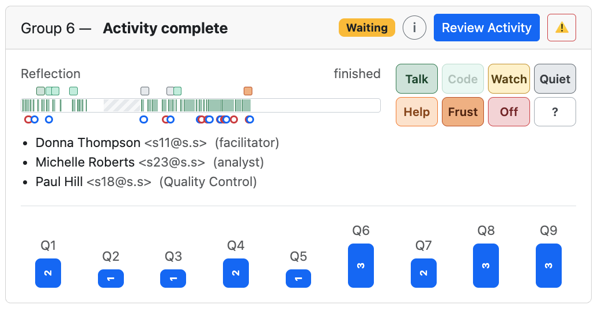

coLearn-AI records every group submission, every AI decision, and every revision as an append-only interaction trace. The research statistics features turn that trace into measures that address three research questions about AI-gated collaborative learning. These features also give instructors a live view of how each group is working during class.
coLearn-AI makes two structural interventions. First, the group shares one activity, and turns rotate so a single student is responsible for each submission. Second, the AI gates progression: when reasoning is insufficient, it sends the answer back instead of letting the group move on. Each research question asks whether one of these mechanisms does what it is designed to do.
In unstructured group work, one confident student often does most of the work while the others watch. Rotating the active role is meant to spread both the work and the responsibility. Does it?
Balanced submits do not guarantee balanced thinking. A group can rotate the keyboard while one person dictates. That is why the live observation tags exist. Watch (one drives, others watch) and Talk (discussing together) give a human check on what the trace counts.
The Group Size breakdown asks whether equity holds for groups of 2, 3, and 4.
When the AI sends an answer back, it explains what reasoning is missing. Do students rethink the answer, or do they make the smallest edit that might get through?
These are measures of revision size, not quality. A one-word fix can be a real insight, and a full rewrite can be noise. For qualitative coding, the feedback_revision_pairs export places each answer before, the AI feedback, and the answer after side by side. This is where human analysis, or LLM-assisted coding, takes over.
Gating is never absolute. After the allowed retries, a group can press Continue, and an instructor can force-advance a group. How often do groups earn their way forward?
Every question gets exactly one outcome:
ai_accepted: the reasoning met the bar.continued: the group used Continue after retries.instructor_advanced: the instructor force-advanced the group.unresolved: the group stopped there.Supporting measures:
A high Continue rate on one question usually says more about the question or its feedback prompt than about the students. The guidance may be too strict, or the expected answer too narrow. Breaking these outcomes down by question and by question type tells activity authors where to revise. This is the "closing the loop" idea from Part 5.
On the instructor's View Groups page, an Observation view adds a timeline and tag buttons to each group's card. This lets one instructor watch a whole room, see which groups are stuck, and record what they observe with one tap. The card below shows a three-person group that has finished a nine-question-group activity.

1 2 3 4 5 6 7 8 9 10A completed group in Observation view. The numbers match the list below.
The group number and where it is: Question Group 4 of 9, Activity complete, Ended – incomplete, and so on.
When the author gives a section a time budget, the badge counts down (12 min left). It turns yellow near the end and red at Time out. Waiting means no timed section is running. Here the group has finished. Paused and Ended are the other states.
i opens a key that explains every color and symbol on the card. Review Activity opens the group's work. The ⚠️ menu holds the deliberate interventions: clearing answers, force-advancing the group, or deleting the run. Each one asks for confirmation. A force-advance is logged as an intervention for RQ3.
On the left is the section the group is in (Reflection), with elapsed time against the section budget, such as 6:10 of 10 min. On the right is the group's state. During a run it shows an idle timer that turns red after two minutes without activity. Here it reads finished.
A timeline from the start of the run (left) to now (right), scaled to the activity's planned minutes.
active: typing, running code, submitting, or waiting on the AI · only teammates working in their Local Sandbox · idle · active but past the section's planned time · paused by the instructor (never counted as time)
AI wait time counts as active, so a group waiting on feedback never looks idle.
Each tap on a tag button drops a square at that moment, in the tag's color. In this run the instructor recorded several Talk, Code, and Quiet moments and one Frust late in the activity.
submit accepted, and the group moved on. submit sent back by the AI. A red ring followed closely by a blue one shows a quick, successful revision. A run of red rings shows a group struggling with the AI's requirements. These are RQ2 and RQ3 as they happen.
Eight large buttons in fixed positions, sized for tapping on a tablet while walking the room. Mistaken taps can be undone for 10 seconds. Code is enabled only when the current question involves code. The full legend is below.
Each student's assigned collaborative role. The student who currently holds the turn and those who are connected are marked with icons. The rotating turn is the mechanism behind RQ1.
One bar per question group. The number is how many group submissions that question group took, and the bar height scales with it. A single submit (1) means the AI accepted the first attempt. Here Q6, Q8, and Q9 each took three submissions, so those are the questions to look at when revising the activity.
The tags record what the trace cannot see: how the group is behaving in the room. Each tag has a short behavioral cue so different instructors apply the tags consistently.
| Tag | Meaning | What to look for |
|---|---|---|
| Talk | Discussing | Talking about the problem together. |
| Code | All coding | Everyone working on the code (code questions only). |
| Watch | One drives, others watch | Focused on screens; one person types, the others watch. |
| Quiet | Quiet, on task | Silent but working: reading or thinking. |
| Help | Asking for help | Hand up, or asking or waiting for the instructor. |
| Frust | Frustrated | Sighs, head in hands, repeated failed runs. |
| Off | Off topic | Socializing, phones, other work. |
| ? | Can't tell | Not visible, or unsure what they are doing. |
A separate Research Statistics area aggregates across runs, activities, and courses. Shared filters are kept in the URL, so a filtered view can be bookmarked or shared. The filters cover courses, date range, group size, question type, and the idle threshold used for time on task (10 minutes by default).
Scale, headline results, data coverage, and every exclusion, with counts.
The core measures for RQ1, RQ3, and RQ2.
Active versus wall-clock time (pauses excluded, idle gaps capped), time between attempts, and instructor force-advances and rotations.
The same measures broken down by group size, by question type (code writing, code reading, output prediction, debugging, explanation, and others), and by week or position in the course.
| Export | One row per… | Use |
|---|---|---|
question_attempts | evaluated attempt | AI decision, submitter pseudonym, time since the previous attempt, and the question's final outcome. Supports RQ3. |
feedback_revision_pairs | AI rejection | Answer before, AI feedback, answer after, who revised, the next decision, and edit-distance measures. Supports RQ2 and qualitative coding. |
group_participation | group run | Submit and turn balance, top share, streaks, skipped and reassigned turns, interventions, outcome counts, and time. Supports RQ1. |
student_longitudinal | student per run | Submits, share of group submits, accepted and rejected attempts, and turns taken. Follows students across a course. |
aggregate_statistics | metric | The aggregate table from the current filtered view. |
The research features are designed so that researchers can study patterns without learning who the students are, and so that live monitoring records behavior, not content.
Students, groups, and instructors appear in exports only as pseudonyms such as S-3f9a…. Each pseudonym is a keyed hash (HMAC-SHA256) made with a secret that is held only on the server. A pseudonym stays the same across exports, so longitudinal analysis works, but it cannot be reversed without the server secret. If that secret is not configured, exports are refused.
Names and email addresses never leave the platform in research data. Student-level statistics include only accounts with the student role, so instructors and TAs who join a group do not distort the results.
Only instructors and activity creators can see research statistics, and only for their own courses. Administrators can see everything. The same rules apply to metrics, exports, run reconstruction, the live view, and observations.
The activity strip is built from on/off activity flags in 10-second slices, with no keystrokes or text. Local Sandbox work sends only a content-free "working locally" signal, at most every 10 seconds. Nothing typed in the sandbox is recorded.
feedback_revision_pairs includes answer text and AI feedback, because studying revision (RQ2) requires the words themselves. The interface labels it "Contains answer text." Treat it as identifiable data: students sometimes write their own names or personal details in free-text answers. Course names and activity titles are also exported as plain text. Research use of student data falls under each institution's IRB and consent process. The platform does not collect consent itself.